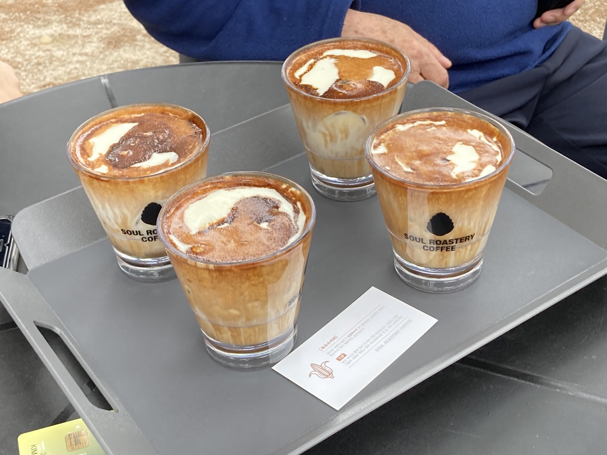
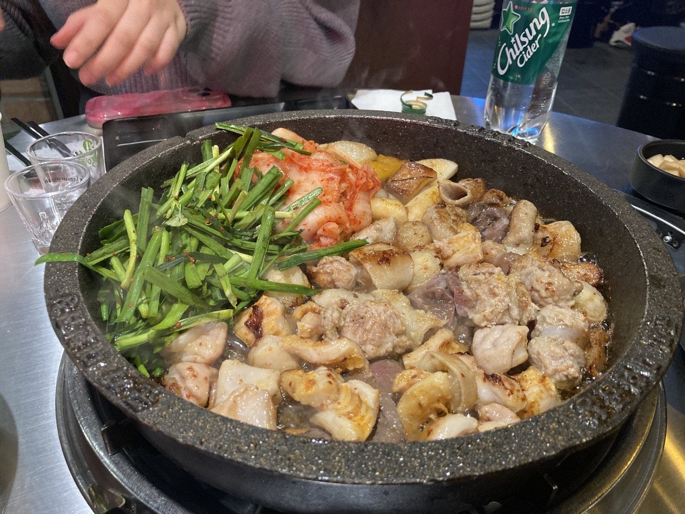

I want to live by listening to good things, seeing good things, and enjoying good things. I want to feel every moment and die so happily that I don't have any regrets even when I close my eyes later. I don't know yet what direction I'm going to get a job after graduating from the computer science department. I'm not even sure what I want to make. I want to study harder and make something of myself someday. Below is my life bucket list.
My name is Kim Hye Min and I am 22 years old. I haven't achieved anything yet, but I'm doing well. I want to fulfill it step by step and fill my life with good hearts.
Music!
"요샌 자주 못보지만
가장 때 묻지 않은 그런 감정은
우리만의 것"
listen!
백예린의 노래들을 아주 좋아한다. 아침이든 밤이든 봄이든 겨울이든 들을 때마다 나 자신을 찾는 기분이다.
요즘과 같은 날씨에 듣기 좋은 노래는 '지켜줄게', '돌아가자'이다.
"시간은 많아, 이대로면 아마 영원히 살 수 있지 않을까?"
listen!
Food!


Words!
"시장을 가도 가장 예쁜 과일을 고르고,
그 중에서도 가장 예쁜 쪽은 네가 먹어라."
"그대의 영혼 속에 깃들어 있는 영웅을 절대 버리지 않기를, 그대가 희망하는 삶의 최고봉을 계속 거룩한 곳으로 여기며
똑바로
응시하기를."